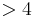

Please direct any questions or issues to this Image.sc Forum thread.
Thank you for your patience as we improve the website!
BigStitcher BoundingBox
If you want to fuse or deconvolve a sub-volume of your dataset (other than all views or the currently selected views), you have to specify that volume by defining a Bounding Box.
The Bounding Box Definition can be started by clicking Define Bounding Box... in the main menu, located under Fusion (Stitching mode) or Displaying (MultiView mode).
Contents
Bounding Box Definition
In the first dialog, you can specify how to define you bounding box in the Bounding Box drop-down menu. The available options are explained in detail below. In addition, you can give your Bounding box a name under Bounding Box Name.
The dialog will also list the currently Existing Bounding Boxes

Modify pre-defined Bounding Box
First, you will be asked for the existing bounding box that you want to modify:

In the next dialog, you can modify the bounding box by adjusting the sliders for the minima and maxima. The size and memory/disk space requirements of a fusion will also be previewed. Clicking OK will generate the new, modified Mounding Box.

Define using the BigDataViewer interactively
This will open a new window allowing you to modify your bounding box by adjusting the sliders for the minima and maxima. If the BigDataViewer is open, the bounding box will be previewed there.

After clicking OK, another dialog will show a preview of the bounding box size and expected memory/disk space requirements for a fused image of the contents of the bounding box. Click OK again to complete the definition.
Maximal Bounding Box spanning all transformed views
This will simply show the Manually define Bounding Box-dialog, preset to a bounding box enclosing all selected views. You can use the sliders to modify the minima and maxima of the bounding box. Click OK to finish the definition.
Automatically find Bounding Box through image filtering
This method will try to automatically find a bounding box around the sample by applying a minimum filter and then thresholding a downsampled version of the fused image.
You will be asked for the following parameters:
- Background intensity (%): relative intensity of background to the maximal intensity in the images, used for thresholding.
- Size of objects to be discarded: size of the box-minimum-filter that is applied to the image before thresholding, effectively removing isolated objects smaller than that.
- Downsampling: by how much to downsample the fused image. Since fusion can be a time and memory-consuming process, we recommend to use a large () downsampling factor, especially if your dataset is big.
- Display image used for segmentation: selecting this will show the fused and the filtered images.

After clicking OK, the bounding box will be estimated and another dialog will show a preview of the bounding box size and expected memory/disk space requirements for a fused image of the contents of the bounding box. Click OK again to complete the definition.
Go back to the main page